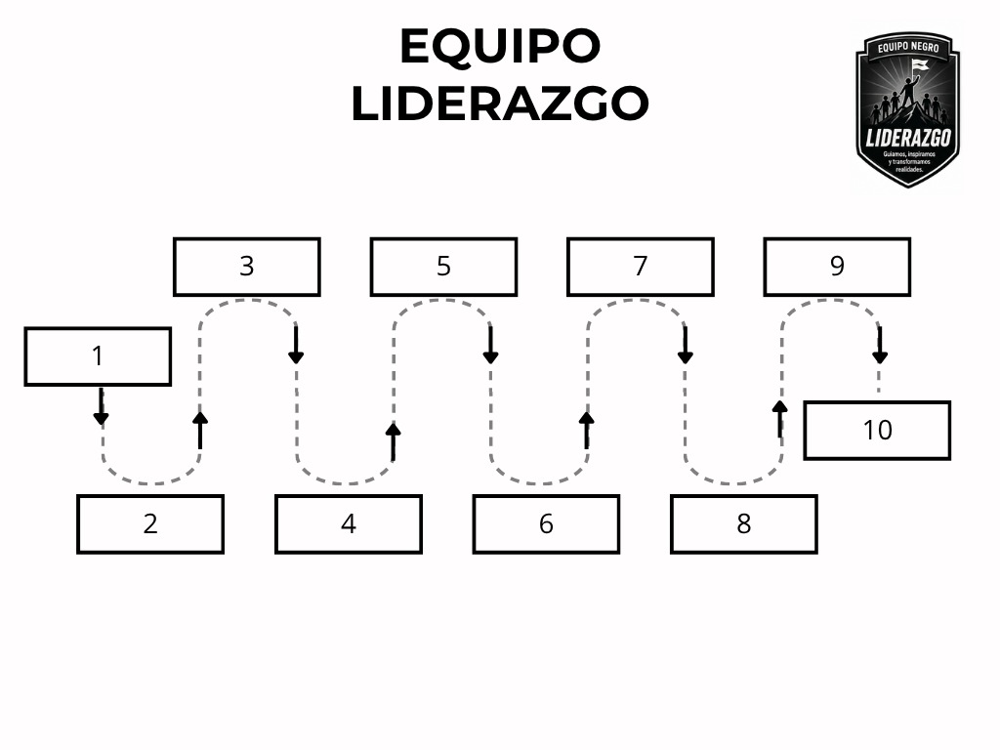

Rally · Equipo Liderazgo
Equipo Liderazgo
Sigan el recorrido en el orden indicado, de la estación 1 a la 10, siguiendo las flechas del mapa.

Indicaciones
- Ascensor lado cafetería
- Caminos del jardín
- Graderías
- Estacionamiento
- Cancha Norte
- Frontis cafetería
- Lado oficina pregado
- Cancha - centro
- Cancha Sur
- Plazoleta
💡 Tip: respeten el orden de las estaciones (1 → 10) tal
como marcan las flechas del mapa.